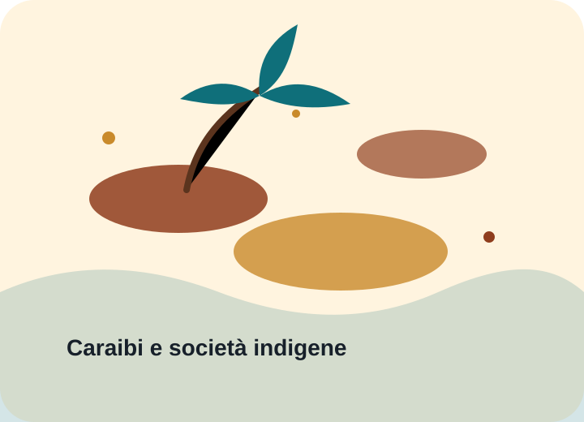

Prospettiva europea
- Nuove rotte commerciali
- Espansione politica e religiosa
- Ricerca di ricchezza e prestigio
Popolazioni indigene
L’arrivo europeo nei Caraibi mise in contatto società molto diverse. La storia va letta considerando anche il punto di vista delle popolazioni indigene.
I Taíno erano tra i principali popoli delle isole caraibiche. Vivevano in comunità organizzate, praticavano agricoltura, navigazione, pesca e avevano strutture sociali e religiose articolate.
L’incontro iniziale fu seguito da processi di conquista, sfruttamento e diffusione di malattie che ebbero conseguenze drammatiche per le popolazioni indigene.

Educazione civica e storia
Un buon sito storico non celebra in modo superficiale: spiega cause, fatti e conseguenze, riconoscendo la complessità dell’evento e il ruolo delle persone coinvolte.